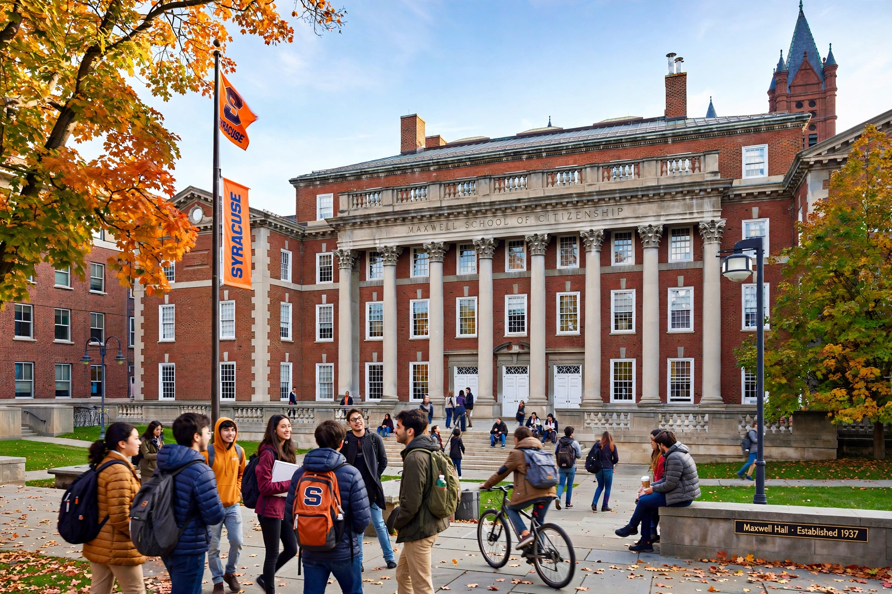

The Maxwell School of Citizenship and Public Affairs is the professional school of public policy, international relations, and social sciences at Syracuse University in Syracuse, New York, founded in 1924.

| Maxwell School | |
|---|---|
| Established | 1924 |
| Parent | Syracuse University |
| Location | Syracuse, New York, U.S. |
Founded with a gift from George Holmes Maxwell, it was the first university program to combine social science disciplines with professional public administration training in one school.
Its Master of Public Administration and international relations programs are consistently ranked among the top in the United States. Departments include political science, economics, history, sociology, anthropology, and geography.